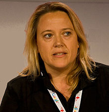

Nancy Cruickshank was born in London. Her father worked for Revlon and, when she
was 11, her parents moved to Hong Kong while she attended a boarding school.
She
graduated from the University of Leeds with a degree in history.
Cruickshank began her career at Condé Nast in magazine and advertising sales In
1995 she was named commercial director of Condé Nast online and helped launch
the publisher's titles online, including Vogue and GQ. In April 2000 she and her
husband, Jim, launched a property site, Smove.com.
Cruickshank founded Handbag.com in 2000. She stated in 2014 that it grew to be
the number-one fashion and beauty website in the UK, with 1.5 million visits
monthly. Cruickshank sold the Handbag Publishing Group to the National Magazine
Company, a member of the Hearst Group, in 2006 for a reported £22 million.
After
staying on as managing director for another year, she became CEO of VideoJug, a
"how-to video website", in October 2007. In March 2009 she was named executive
director of digital development for the Telegraph Media Group.
From April 2012 to March 2013 she served as launch CEO of Weve, a media and
mobile commerce joint venture for UK mobile operators.
In June 2012 Cruickshank, together with Kate Shapland, Rodrigo Dauster, and
Olivier Beau de Loménie, launched MyShowcase.com.
This direct-sales retailer
promotes 25 beauty brands through home showings led by MyShowcase salespeople;
products are also sold online.
Cruickshank served for many years as a board member of the Cosmetic Executive
Women trade organisation In 2013 she became an independent non-executive
director for the TelecityGroup. In 2014 she was named an independent director of
OnMobile.
Cruickshank met her husband, Jim, at the University of Leeds when they were both
19. They married in 1997 and have two daughters. They maintain homes in London
and Devon.